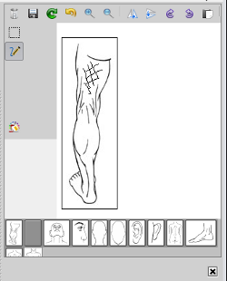

|  |
- By moving your mouse over the diagrams included in the editor, they will enlarge to allow you to choose the one you want, double clicking will then insert the picture into the editor.
- By selecting the appropriate buttons you may draw on the diagram.
item When finished clicking the drawing editor's save button will insert the picture back into the notes, or clicking
on the editors close button located underneath the editor will cancel the drawing proceedure.
|